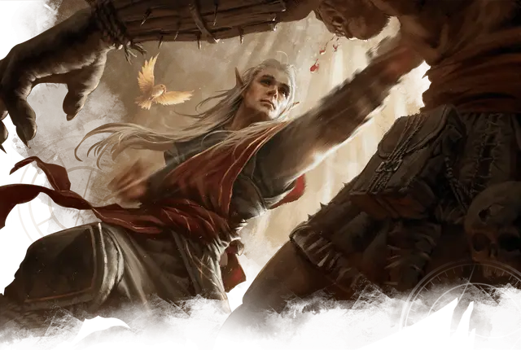

Адепт боевых искусств
Martial Arts Adept
Средний Гуманоид, любое мировоззрение

Класс Доспеха 16 (защита без доспехов)
Хиты 60 (11к8 + 11)
Скорость 40 футов
| мод | спас | ||
|---|---|---|---|
| СИЛ | 11 | +0 | +0 |
| ЛОВ | 17 | +3 | +3 |
| ТЕЛ | 13 | +1 | +1 |
| мод | спас | ||
|---|---|---|---|
| ИНТ | 11 | +0 | +0 |
| МДР | 16 | +3 | +3 |
| ХАР | 10 | +0 | +0 |
Навыки Акробатика +5, Проницательность +5, Скрытность +5
Чувства пассивное Восприятие 13
Языки Любой один язык (обычно Общий).
Опасность 3 (700 опыта)
Бонус мастерства +2
Среда обитания Город
Особенности
Защита без доспехов. Пока адепт не носит ни доспехи, ни щит, к КД прибавляется его модификатор Мудрости.
Действия
Мультиатака. Адепт совершает три Безоружных удара или пять атак Дротиком.
Безоружный удар. Рукопашная атака оружием: +5 к попаданию, досягаемость 5 футов, одна цель. Попадание: 7 (1к8 + 3) дробящего урона. Один раз в ход, адепт может выбрать один из следующих дополнительных эффектов (выберите один или бросьте к4):
• 1–2: Сбивание с ног. Цель должна преуспеть в спасброске Ловкости Сл 13 или будет сбита с ног.
• 3–4: Толчок. Цель должна преуспеть в спасброске Силы Сл 13 или будет отброшена от адепта на расстояние до 10 футов.
Дротик. Дальнобойная атака оружием: +5 к попаданию, дистанция 20/60 футов, одна цель. Попадание: 5 (1к4 + 3) колющего урона.
Реакции
Отражение снарядов. В ответ на попадание по нему дальнобойной атакой оружием, адепт отражает снаряд. Урон от этой атаки уменьшается на 1к10 + 3. Если урон уменьшился до 0, адепт поймал снаряд, если он достаточно мал, чтобы держать его одной рукой, и у адепта есть свободная рука.
Описание
Адепты боевых искусств – дисциплинированные монахи, хорошо обученные рукопашному бою. Одни защищают монастыри; другие путешествуют по миру, ища просветление или новый вид мастерства в бою. Некоторые становятся телохранителями, обменивая своё боевое мастерство и лояльность на еду и жильё.
Некоторые адепты боевых искусств украшают себя татуировками для отваги или в честь инструкторов, или чтобы увековечить глубокие уроки, победы или поражения. Вы можете совершить бросок по таблице Татуировок адепта боевых искусств, чтобы определить, какую татуировку носит адепт.
Татуировки адепта боевых искусств
| к8 | Татуировки |
| 1 | Узор на руках, из-за которого они выглядят так, как будто сделаны из мрамора или гранита |
| 2 | Разноцветные чешуйки дракона |
| 3 | Коллаж из забавных Элементалей или Фей |
| 4 | Созвездия на ладони каждой руки |
| 5 | Фрагмент из военного руководства |
| 6 | Красивые, но ядовитые цветы |
| 7 | Два коатля, парящие друг с другом, выполненные металлическими чернилами |
| 8 | Детализированный пейзаж, изображающий природную красоту |